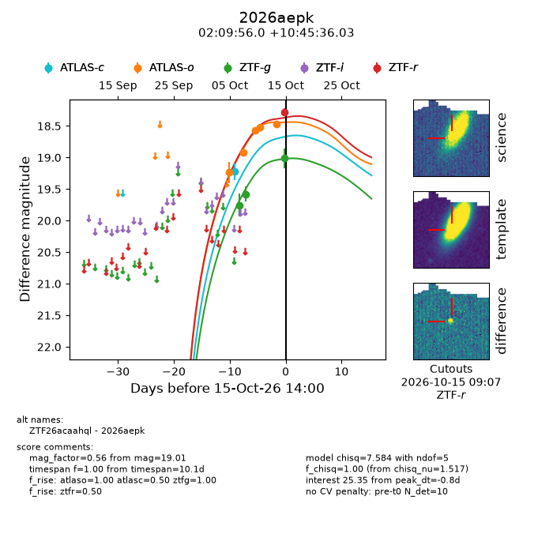
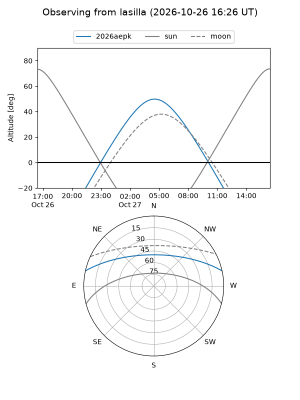
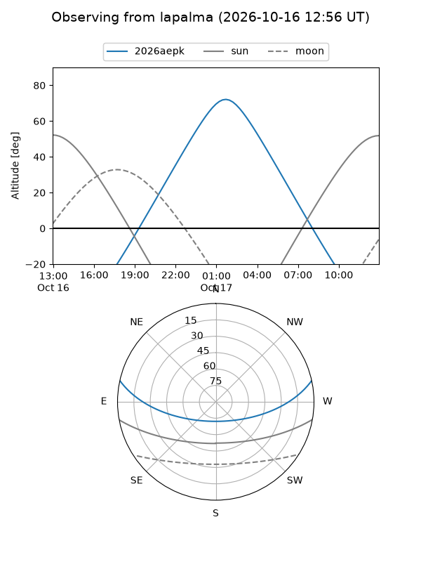
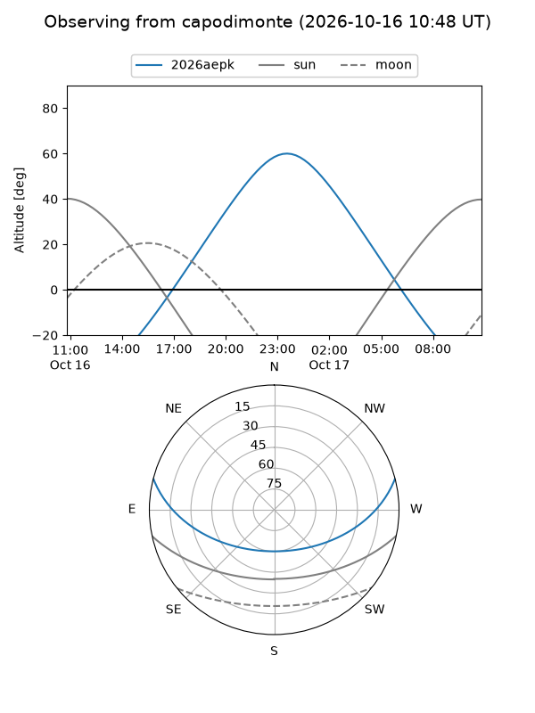
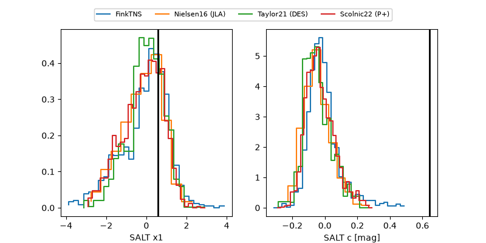

2026aepk
Target 2026aepk at 2026-10-15 14:01
Aliases and brokers:
FINK-ZTF: ztf.fink-portal.org/ZTF26acaahql
Lasair-ZTF: lasair-ztf.lsst.ac.uk/objects/ZTF26acaahql
ALeRCE-ZTF: alerce.online/object/ZTF26acaahql
YSE-PZ: ziggy.ucolick.org/yse/transient_detail/2026aepk
TNS name: wis-tns.org/object/2026aepk
Direct TNS query: direct search
alt names
ZTF26acaahql (ztf,fink_ztf)
2026aepk (tns,yse)
Coordinates:
equatorial (ra, dec) = 32.4833,+10.76001
equatorial (HMS+DMS) = 02:09:55.99,+10:45:36.03
galactic (l, b) = (152.2252,-47.59755)
Flags:
peak dt: -0.8
CV pen: 0.3738777031668979
Photometry:
last atlasc=19.22, atlaso=18.47, ztfg=19.01, ztfr=18.28
1 atlasc, 5 atlaso, 3 ztfg, 1 ztfr detections
Lightcurve

Visibility



Additional plots
